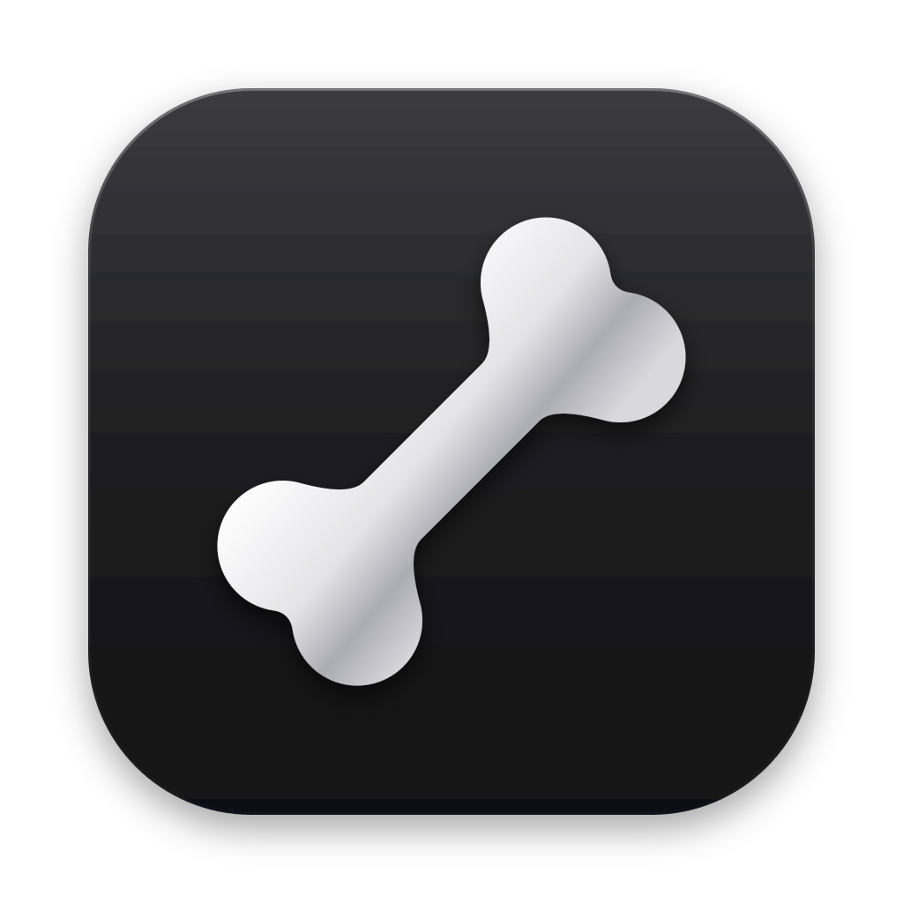

Barebone logo
A bone on the same rounded tile as the old icon. Each version is shown large, then at 128, 64, 32 and 16 px.
Graphite
Silver bone on the dark metallic tile. Same finish as the old JH icon.

Blue
White bone on the app's accent blue (#2f6fed). Stands out most in the Dock.
Paper In the app
Ink bone on a warm paper tile. The quietest of the three.